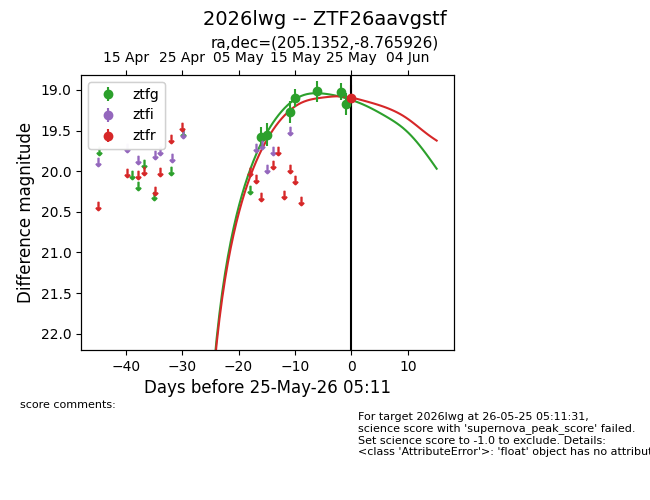
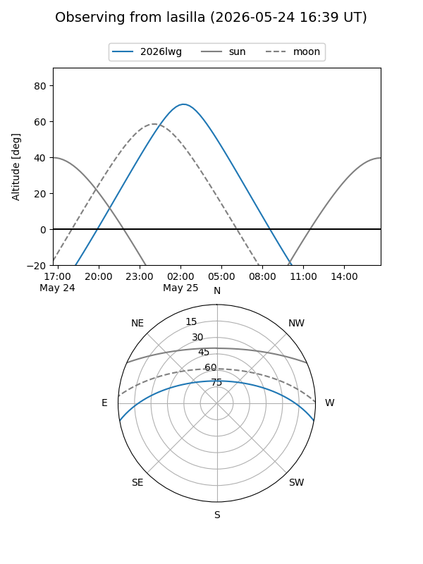
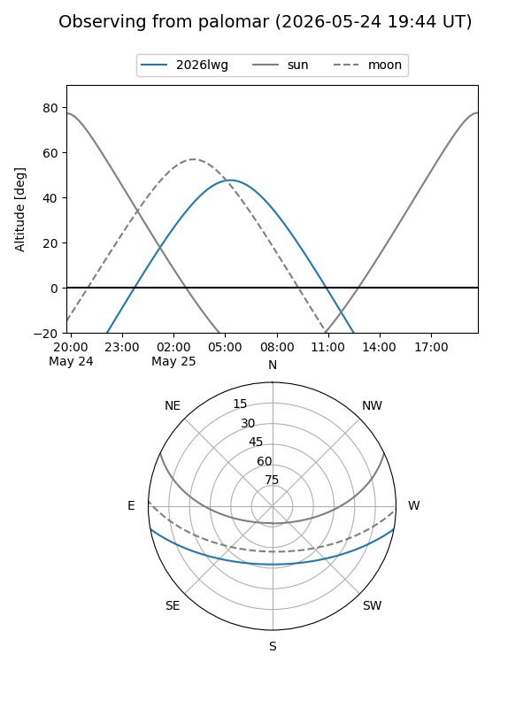
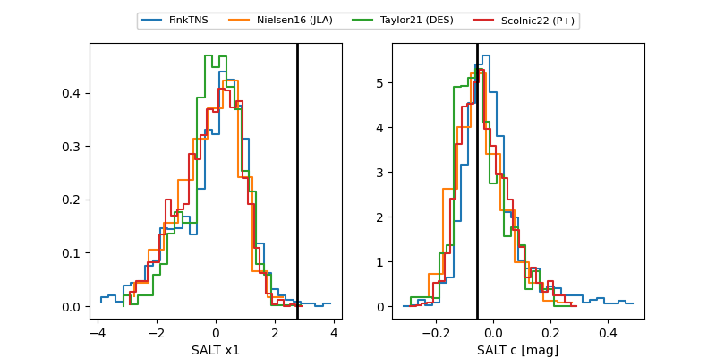

2026lwg
Target 2026lwg at 2026-05-25 05:12
Aliases and brokers:
lsst-FINK: link
lsst-Lasair: link
lsst-ALeRCE: link
ztf-FINK: link
ztf-Lasair: link
ztf-ALeRCE: link
TNS: link
YSE: link
alt names
ZTF26aavgstf (ztf,fink_ztf)
2026lwg (tns,yse)
Coordinates:
equatorial (ra, dec) = 205.1352,-8.76593
equatorial (HMS+DMS) = 13:40:32.44,-08:45:57.33
galactic (l, b) = (322.9750,+52.18459)
Flags:
TNS confirmed: nan
Photometry:
last ztfg=19.17, ztfr=19.09
7 ztfg, 1 ztfr detections
Lightcurve

Visibility


Additional plots
